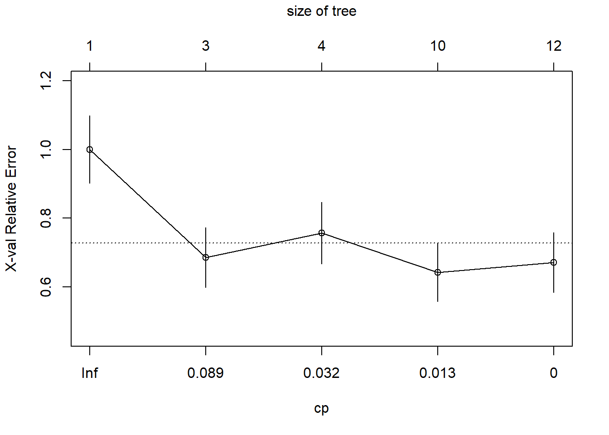

dAge <- data.frame(ratio=c(0.040,0.070,0.070,0.075,0.080,0.085,0.105,0.110,0.115,
0.130,0.140,0.150,0.160,0.165,0.170),
age=c(0,2,16,10,18,19,16,21,21,25,26,28,34,39,40))L5 Classification and regression trees
1 Introduction to regression trees
Refer to Hastie, Tibshirani, and Friedman (2001) Chapter 9.2.
Predicting age at death: During aging, L-aspartic acid transforms into its D-form. Researchers obtained bone specimens from 15 human skulls with known age at death and measured the ratio of D-aspartic to L-aspartic acid.
| Ratio of D-aspartic to L-aspartic acid | Age |
|---|---|
| 0.040 | 0 |
| 0.070 | 2 |
| 0.070 | 16 |
| 0.075 | 10 |
| 0.080 | 18 |
| 0.085 | 19 |
| 0.105 | 16 |
| 0.110 | 21 |
| 0.115 | 21 |
| 0.130 | 25 |
| 0.140 | 26 |
| 0.150 | 28 |
| 0.160 | 34 |
| 0.165 | 39 |
| 0.170 | 40 |
Here is a plot of the same data from the table.
plot(age~ratio, data=dAge,
xlab="acid ratio", ylab="age",
pch=19)
Loss function: Let’s find a function, \(f(\mathbf{x})\), that minimizes squared error loss.
\[ \hat J(f) = \sum_{i=1}^N (y_i-f(\mathbf{x}_i))^2 \]
Consider a variation on \(k\)-nearest neighbors
- Rather than fix \(k\), fix the number of neighborhoods. For computational convenience fix the number of neighborhoods to two
- Each neighborhood does not need to have the same number of observations
- Define a neighborhood on a single variable
This basically fits a piecewise constant function to the data. Partition the dataset into two groups and predict a constant within each group.
How to split: Let’s find a good split point on the \(x\) variable “ratio”. To the left of this split point we will predict one constant value and to the right of this split point we will predict another. The next table lists all the possible places where we can split the dataset into two groups. For the left prediction, \(y_L\), we will use the average age of the observations less than the split point and for the right prediction, \(y_R\), we will use the average of the age of the observations greater than the split point.
Now our squared-error loss function looks like
\[ \hat J(c,y_L,y_R) = \sum_{i=1}^N I(x_i\leq c)(y_i-y_L)^2 + I(x_i>c)(y_i-y_R)^2. \] We just need to find values for \(c\), \(y_L\), and \(y_R\) that minimize \(\hat J(c,y_L,y_R)\).
| Ratio | Age | Split | Left Prediction | Right prediction | Squared error |
|---|---|---|---|---|---|
| 0.040 | 0 | ||||
| 0.070 | 2 | ratio \(\leq\) 0.0550 | 0 | 22.5 | 97.2 |
| 0.070 | 16 | ||||
| 0.075 | 10 | ratio \(\leq\) 0.0725 | 6 | 24.08 | 72.8 |
| 0.080 | 18 | ratio \(\leq\) 0.0775 | 7 | 26.09 | 57.4 |
| 0.085 | 19 | ratio \(\leq\) 0.0825 | 9.2 | 26.9 | 59.0 |
| 0.105 | 16 | ratio \(\leq\) 0.0950 | 10.83 | 27.78 | 59.8 |
| 0.110 | 21 | ratio \(\leq\) 0.1075 | 11.57 | 29.25 | 50.9 |
| 0.115 | 21 | ratio \(\leq\) 0.1125 | 12.75 | 30.43 | 50.9 |
| 0.130 | 25 | ratio \(\leq\) 0.1225 | 13.67 | 32 | 48.0 |
| 0.140 | 26 | ratio \(\leq\) 0.1350 | 14.8 | 33.4 | 51.8 |
| 0.150 | 28 | ratio \(\leq\) 0.1450 | 15.82 | 35.25 | 54.8 |
| 0.160 | 34 | ratio \(\leq\) 0.1550 | 16.83 | 37.67 | 59.2 |
| 0.165 | 39 | ratio \(\leq\) 0.1625 | 18.15 | 39.5 | 76.0 |
| 0.170 | 40 | ratio \(\leq\) 0.1675 | 19.64 | 40 | 102.9 |
Which split point should we choose?
plot(age~ratio, data=dAge, pch=19)
lines(c(0.04,0.1225),c(13.67,13.67))
lines(c(0.1225,0.17),c(32,32))Equivalently we can look at this as a regression tree. In R, rpart, recursive partitioning, implements the trademarked CART algorithm.
What should we do next? Recursive split the nodes.
plot(age~ratio, data=dAge, pch=19)
lines(c(0.04,0.0775),c(7,7))
lines(c(0.0775,0.1225),c(19,19))
lines(c(0.1225,0.155),c(26.33,26.33))
lines(c(0.155,0.17),c(37.67,37.67))2 Introduction to classification trees
At crime scenes investigators need to determine whether glass fragments came from a window, eyeglasses, wine glass, or some other source. In this example we want to discriminate between window glass and other types of glass based on the samples’ refractive index and sodium concentration.
Where should we split? The first table shows the data sorted by refractive index and the second table shows the same data sorted on sodium concentration.
| Refractive index (sorted) | Na % | Window glass |
|---|---|---|
| 1.51590 | 13.24 | 1 |
| 1.51613 | 13.88 | 0 |
| 1.51673 | 13.30 | 1 |
| 1.51786 | 12.73 | 1 |
| 1.51811 | 12.96 | 1 |
| 1.51829 | 14.46 | 0 |
| 1.52058 | 12.85 | 0 |
| 1.52152 | 13.12 | 1 |
| 1.52171 | 11.56 | 0 |
| 1.52369 | 13.44 | 0 |
| Refractive index | Na % (sorted) | Window glass |
|---|---|---|
| 1.52171 | 11.56 | 0 |
| 1.51786 | 12.73 | 1 |
| 1.52058 | 12.85 | 0 |
| 1.51811 | 12.96 | 1 |
| 1.52152 | 13.12 | 1 |
| 1.51590 | 13.24 | 1 |
| 1.51673 | 13.30 | 1 |
| 1.52369 | 13.44 | 0 |
| 1.51613 | 13.88 | 0 |
| 1.51829 | 14.46 | 0 |
The best split on refractive index is between 1.51811 and 1.51829, giving a misclassification rate of 2/10. The best split on sodium concentration is between 13.30 and 13.44, which also gives a misclassification rate of 2/10. Splitting on either refractive index or on sodium concentration gives the identical misclassification rate. In both cases we have two misclassified observations. The most common way to break such ties is to go with the split that results in more pure nodes. Splitting on sodium concentration peels off three observations that are not window glass, creating a pure non-window glass group. Note that this is not the only possible choice, just a common one.
Here is the best two-split classification tree. It first separates the three non-window glass with high sodium. Then among the low sodium concentration samples, it peels off the four windows with low refractive index.
dGlass <- data.frame(ri=c(1.52171,1.51786,1.52058,1.51811,1.52152,1.51590,
1.51673,1.52369,1.51613,1.51829),
na=c(11.56,12.73,12.85,12.96,13.12,13.24,13.30,13.44,
13.88,14.46),
window=c(0,1,0,1,1,1,1,0,0,0))
plot(na~ri, data=dGlass, pch=as.character(dGlass$window),
xlab="Refractive index",
ylab="Na concentration")
a <- par()$usr
rect( a[1], 13.37, a[2], a[4], col="lightblue")
rect(1.51934, a[3], a[2], 13.37, col="lightblue")
text(dGlass$ri, dGlass$na, as.character(dGlass$window))3 Tree size and cross-validation
We can continue to recursively partition the data until every observation is predicted as best as possible. Though, perhaps fitting the data perfectly is not ideal. This tree has 13 terminal nodes. Perhaps that is too many nodes. Why?
This tree has two terminal nodes. Perhaps that is too few.
3.1 Cross-validation
Cross-validation is the standard way for optimizing the choice for tuning parameters in machine learning methods. For knn, the tuning parameter was the number of neighbors. For classification and regression trees, the tuning parameter is the number of splits (or number of terminal nodes). Perhaps we might consider leave-one-out cross-validation as we did for knn.
- Leave out the first observation.
- Fit a tree using the other observations with two terminal nodes, and predict for the left out observation.
- Recursively split so the tree now has three terminal nodes and predict for the left out observation.
- Recursively split so the tree now has four terminal nodes and predict for the left out observation.
- And carry on in this fashion until observation 1 has predictions from all sized trees.
Now put the first observation back in the dataset and remove the second one. Repeat the process. This leave-one-out procedure simulates what would happen in reality, fitting a tree to a fixed dataset and then having to predict for a future observation.
When the dataset is small, LOOCV is feasible, but it quickly becomes too much computational effort for large datasets. For large datasets, the most common approach is to use 10-fold cross validation. Rather than holding out 1 observation at a time, 10-fold cross-validation holds out 10% of the data at a time and uses the remaining 90% of the data for learning the tree.
- Randomly assign every observation a number between 1 and 10. For example,
mydata$fold <- rep(1:10, length.out=nrow(mydata)) |> sample() - Hold out all observations with
fold==1 - Fit a tree with two terminal nodes using the other observations (
filter(mydata, fold!=1)), and predict for the left out observations (predict(mytree, newdata=filter(mydata,fold==1))) - Recursively split so the tree now has three terminal nodes and predict for all the held out observations
- Recursively split so the tree now has four terminal nodes and predict for all the held out observations
- Carry on in this fashion until all observations in fold 1 have predictions from all sized trees.
Repeat steps 2-6 for fold=2, …, 10. In this way, all observations have predictions from trees that did not use those observations in the learning process. This is more efficient than LOOCV in that we only had to fit 10 trees rather than \(n\) trees.
4 Analysis of the age at death data using rpart()
Let’s revisit the problem of predicting age at death.
plot(age~ratio, data=dAge,
xlab="acid ratio", ylab="age",
pch=19)In this section we will use rpart() to fit a regression tree. rpart() has a parameter xval that you can set to the number of folds to use for cross-validation. Here I have set xval=15. Since the dataset has 15 observations, this is equivalent to LOOCV. method="anova" tells rpart() that this is a regression problem. minsplit=2 and minbucket=1 tells rpart() that it should try to split any node that has at least two observations and that every terminal node should have at least 1 observation. This is the minimum possible. The complexity parameter, cp, tells rpart() to only consider
# load the rpart library
library(rpart)
# show all the rpart commands
# library(help="rpart")
# search for commands with the phrase "rpart"
# help.search('rpart')
# fit the tree perfectly to the data
# minimum obs to split is 2, min obs in node = 1,
# complexity parameter = 0 --> do not penalize size of tree
set.seed(20240214)
tree1 <- rpart(age~ratio,
data=dAge,
method="anova",
cp=0,
xval=15,
minsplit=2,
minbucket=1)par(xpd=NA)
plot(tree1, uniform=TRUE, compress=TRUE)
text(tree1)The figure below shows the LOOCV estimate of prediction error, which seems to be minimized with a tree with five terminal nodes (axis at the top of the graph). I have also printed out the table with the details. Note that the table counts the number of splits rather than the number of terminal nodes.
# compare complexity parameter to leave-one-out cross-validated error
plotcp(tree1)
printcp(tree1)
Regression tree:
rpart(formula = age ~ ratio, data = dAge, method = "anova", cp = 0,
xval = 15, minsplit = 2, minbucket = 1)
Variables actually used in tree construction:
[1] ratio
Root node error: 1930/15 = 128.67
n= 15
CP nsplit rel error xerror xstd
1 0.62694301 0 1.000000 1.14796 0.35668
2 0.16580311 1 0.373057 0.55008 0.13547
3 0.09982729 2 0.207254 0.49964 0.16449
4 0.03385147 3 0.107427 0.29321 0.13030
5 0.01044905 4 0.073575 0.26903 0.12294
6 0.00690846 5 0.063126 0.30841 0.14135
7 0.00215889 6 0.056218 0.29543 0.14297
8 0.00034542 8 0.051900 0.28529 0.13292
9 0.00025907 9 0.051554 0.28212 0.13233
10 0.00000000 12 0.050777 0.27824 0.13256Here I’ll display the tree fit to the entire dataset, using the LOOCV estimated optimal number of terminal nodes.
# a little function to extract the best value for cp
bestCP <- function(myTree)
{
cpTable <- myTree$cptable
i <- which.min(cpTable[,"xerror"])
return( cpTable[i,"CP"] )
}
# "prune" the tree to the optimal size
treeFinal <- prune(tree1, cp=bestCP(tree1))
# predict using the tree
# generate a sequence, of length 200, over the range of the acid ratio
x <- seq(min(dAge$ratio), max(dAge$ratio), length.out=200)
# predict age for the 200 ratios
y <- predict(treeFinal, newdata=data.frame(ratio=x))
# plot the actual data
plot(age~ratio,
data=dAge,
xlab="ratio", ylab="age", pch=16)
# draw lines for the fitted tree
lines(x,y)5 Analysis of the glass data - a classification problem
Note here that I reset minsplit=20 and minbucket=7, their default values. Like this rpart() will not consider splitting a node unless there are at least 20 observations in it and each subsequent node must have at least 7 observations. Also note that I have set method="class". This changes the loss function from least squares to misclassification rate. Misclassification costs default to equal costs, so the threshold for predicting window glass is \(p>0.5\).
This time we will use the full glass dataset from the UCI machine learning archive. The glass type variable type can take on seven different values for seven different types of glass. While the CART algorithm can be used for multiclass classification problems, for simplicity we will just try to identify glass of type 1, float-processed building window glass (the most typical window glass made by pouring molten glass on to molten tin…, by the way, four companies make almost all of the world’s glass). Here is the full list of the
- building windows, float processed
- building windows, non-float processed
- vehicle windows, float processed
- vehicle windows, non-float processed (none in this database)
- containers
- tableware
- headlamps
If you want to do the full multiclass classification, make sure that type is a factor variable and set method="class". I will make a new variable window as a 0/1 indicator of float processed building window glass. Then I will fit the classification tree and try to use cross-validation to estimate the optimal tree size.
dGlass <- read.csv("data/glass.csv") |>
# create 0/1 outcome for float
mutate(window = as.numeric(type==1))
set.seed(20240214)
tree1 <- rpart(window~RI+Na,
data=dGlass,
method="class",
cp=0.0,
minsplit=20, # default
minbucket=7) # default
plotcp(tree1)

And let’s also take a look at the raw numbers themselves.
printcp(tree1)
Classification tree:
rpart(formula = window ~ RI + Na, data = dGlass, method = "class",
cp = 0, minsplit = 20, minbucket = 7)
Variables actually used in tree construction:
[1] Na RI
Root node error: 70/214 = 0.3271
n= 214
CP nsplit rel error xerror xstd
1 0.1857143 0 1.00000 1.00000 0.098045
2 0.0428571 2 0.62857 0.68571 0.087171
3 0.0238095 3 0.58571 0.75714 0.090208
4 0.0071429 9 0.42857 0.64286 0.085162
5 0.0000000 11 0.41429 0.67143 0.086517The optimal tree size appears to have complexity parameter equal to 0.0071429. We use prune() to reduce the tree to this optimal size.
treeFinal <- prune(tree1,
cp=bestCP(tree1))
par(xpd=NA)
plot(treeFinal, uniform=TRUE)
text(treeFinal)Now let’s try running it one more time including all of the glass features in the analysis.
tree1 <- rpart(window~RI+Na+Mg+Al+Si+K+Ca+Ba+Fe,
data=dGlass,
method="class",
cp=0.0,
minsplit=20,
minbucket=7)
plotcp(tree1)printcp(tree1)
Classification tree:
rpart(formula = window ~ RI + Na + Mg + Al + Si + K + Ca + Ba +
Fe, data = dGlass, method = "class", cp = 0, minsplit = 20,
minbucket = 7)
Variables actually used in tree construction:
[1] Al Ca Fe Mg Na RI
Root node error: 70/214 = 0.3271
n= 214
CP nsplit rel error xerror xstd
1 0.1928571 0 1.00000 1.00000 0.098045
2 0.1142857 2 0.61429 0.82857 0.092891
3 0.0857143 3 0.50000 0.62857 0.084459
4 0.0428571 4 0.41429 0.62857 0.084459
5 0.0142857 5 0.37143 0.61429 0.083739
6 0.0071429 7 0.34286 0.62857 0.084459
7 0.0000000 9 0.32857 0.62857 0.084459treeFinal <- prune(tree1, cp=bestCP(tree1))
par(xpd=NA)
plot(treeFinal, uniform=TRUE)
text(treeFinal)6 Other topics
Missing data. Some tree algorithms allow for a third branch for missing values (like having a separate branch for each of age<16, age \(\geq\) 16, age missing). Other tree implementations weight missing observations by what fraction of cases go to a left branch and what fraction go to the right branch.
Splits where the variable is ordinal. For ordinal variables (like education), tree algorithms simply search among all possible ways of splitting the ordinal variable that maintains the ordering (like [education=less than HS or HS] and [education=some college, BA/BS, MA/MS, MD/JD/PhD]).
Splits where the variable is nominal. For nominal variables, tree algorithms consider all possible ways of splitting the observations into two groups. For race, this means that the algorithm needs to consider all possible ways to group five race categories into two groups.
[Asian] and [Black, Hispanic, White, Other]
[Black] and [Asian, Hispanic, White, Other]
[Hispanic] and [Asian, Black, White, Other]
[White] and [Asian, Black, Hispanic, Other]
[Other] and [Asian, Black, Hispanic, White]
[Asian, Black] and [Hispanic, White, Other]
[Asian, Hispanic] and [Black, White, Other]
[Asian, White] and [Black, Hispanic, Other]
[Asian, Other] and [Black, Hispanic, White]
[Black, Hispanic] and [Asian, White, Other]
[Black, White] and [Asian, Hispanic, Other]
[Black, Other] and [Asian, Hispanic, White]
[Hispanic, White] and [Asian, Black, Other]
[Hispanic, Other] and [Asian, Black, White]
[White, Other] and [Asian, Black, Hispanic]
The number of possible splits can get very large. A nominal feature with \(m\) categories will have \(2^m-1\) possible ways of splitting them. For example, if state is one of your features, then there are 562,949,953,421,311 possible splits to evaluate. However, it turns out that if you sort the nominal features by the mean of the outcome, then the optimal split has to have those with the smaller mean outcome in one node and the larger mean outcome in the other node. For example, if for some outcome, \(y\), the race groups are sorted as
| Race | \(\bar y\) |
|---|---|
| Hispanic | 1.7 |
| Asian | 2.8 |
| Black | 3.2 |
| White | 4.1 |
| Other | 5.4 |
then the optimal split has to be one of the following
- [Hispanic] and [Asian, Black, White, Other]
- [Hispanic, Asian] and [Black, White, Other]
- [Hispanic, Asian, Black] and [White, Other]
- [Hispanic, Asian, Black, White] and [Other]
Phew! Rather than having to evaluate all \(2^m-1\) possibilities we just need to evaluate \(m-1\) possible splits.
Interpretability. Part of the appeal of classification and regression trees is that they present a nice interpretable structure. However, exercise 5 in the homework assignment asks you to explore this property.
Names. There are a variety of tree algorithms. The best known algorithms are CART (Classification and Regression Tree), C4.5, and C5.0. The name CART is trademarked, so the R implementation is in the
rpartpackage (recursive partitioning). C5.0 is also available with the R packageC50. They are essentially identical, but they traditionally use different loss functions. Earlier tree structured models were ID3 and CHAID.Out-of-sample predictive performance. The only way to properly evaluate the performance of a machine learning method is to make all the fitting and tuning parameter selection on one dataset and evaluate its performance on a completely independent test dataset.
7 CART on the NELS88 data
In this section we will walk through using the CART algorithm on the NELS88 data. We’ll start by loading some libraries and the dataset.
library(dplyr)
library(tidyr)
load("data/nels.RData")7.1 Practice finding the first split “by hand”
Let’s find the first split “by hand”. We’ll consider all possible ways of splitting the sample into two based on ses, predict the dropout percentage to the “left” and to the “right,” and evaluate in terms of mean squared error. Note that this analysis incorporates F4QWT, which is the sampling weight. It upweights the kinds of students who are underrepresented in the sample and downweights those who are overrepresented in the sample.
# consider all possible splits on SES
sesSplits <- nels0$ses |> unique() |> sort()
# find mid-point between each unique split
sesSplits <- (sesSplits[-1] + sesSplits[-length(sesSplits)])/2
mse <- rep(0, length(sesSplits))
for(i in 1:length(sesSplits))
{
# note the use of F4QWT (sampling weight)
pred <- nels0 |>
group_by(ses<sesSplits[i]) |>
summarize(p=weighted.mean(wave4dropout, F4QWT))
yPred <- ifelse(nels0$ses<sesSplits[i], pred$p[2], pred$p[1])
mse[i] <- weighted.mean((nels0$wave4dropout - yPred)^2, nels0$F4QWT)
}Let’s plot the mean squared error by the SES split point and determine which split point minimizes it.
plot(mse~sesSplits, type="l")
# which split point minimizes MSE?
i <- which.min(mse)
c(sesSplits[i], mse[i])[1] -1.00600000 0.05280747If splitting only on SES, then split at -1.006 is optimal. If we wished to involve other student features, then we would need to repeat the process on all other features to see if any split exists that gives an MSE less than 0.0528075.
7.2 Using rpart to predict dropout
tree1 <- rpart(wave4dropout~ses+famIncome,
method="anova",
data=nels0,
weights=nels0$F4QWT,
control=rpart.control(cp=0.011, xval=0))A few notes on this call to rpart(). Setting method="anova" is equivalent to telling rpart() to minimize squared error. The other most common option is method="class". When selecting method="class" you can set misclassification costs using parms=list(loss=rbind(c(0,1),c(9,0))). cp=0.011 sets the “complexity parameter” to 0.011. rpart() will continue recursively partitioning the data as long as the reduction in the loss function is at least cp. Typically, you would want this to be a little bigger than 0 so that the algorithm does not consider branches that do not really improve predictive performance. For now, we will just let the tree grow. Setting xval=0 tells rpart() not to do any cross-validation. We will change this in a moment.
Let’s take a look at the resulting tree. When uniform=FALSE, the lengths of the branches are drawn in proportion to the reduction in the loss function attributable to the split.
par(xpd=NA)
plot(tree1, uniform=FALSE)
text(tree1, minlength = 20, cex=0.5)Now let’s get some predicted values from the fitted tree.
# get predicted values
nels0$yPred <- predict(tree1, newdata=nels0)And let’s see how the tree has carved up the 2D space.
plot(nels0$famIncome, nels0$ses,
xlab="Family income", ylab="SES")
abline(h=c(-1.006, -0.1875, -1.494))
lines(c(5.5,5.5), c(-3,-1.494))
a <- nels0 |>
group_by(yPred = round(yPred,3)) |>
summarize(famIncome = mean(as.numeric(famIncome), na.rm=TRUE),
ses = mean(ses))
text(a$famIncome, a$ses, a$yPred, col="#3D2C8D", cex=1.5)
7.3 Using 10-fold cross-validation to select the tree size
In the previous section, I fixed the complexity parameter to limit the size of the tree. In this section, we will use 10-fold cross-validation (a more appropriate method) to find the tree depth (or equivalently the complexity parameter) that results in a tree with the best predictive performance.
Ten-fold cross-validation proceeds by
- hold out 10% of the data
- fit a regression tree of depth 1, 2, 3, … on the remaining 90%
- predict the trees of each depth on the held out 10%
- repeat 1-3 for each of the 10 holdout sets
- evaluate predictive performance
In this way, every observation’s predicted value was produced by a model that did not include that observation in its model fitting stage.
Let’s give this a try to figure out the optimal sized tree for predicting wave4dropout from ses.
Note that the first step that I do is to fix the random number generator seed. This is because right at the beginning I randomly assign each observation to a “fold”. Setting the random number generator seed makes it so that if we rerun the same code, we will get the same answer again.
set.seed(20240214)
# compute baseline MSE
pred0 <- nels0 |>
summarize(weighted.mean(wave4dropout, F4QWT)) |>
pull()
mse0 <- nels0 |>
summarize(weighted.mean((wave4dropout - pred0)^2,
F4QWT)) |>
pull()
# for storing the results
mseCV <- c(mse0, rep(NA,10))
# assign each observation to a random number 1 to 10
iFold <- sample(rep(1:10, length.out=nrow(nels0)))
# for storing predicted values
nels0$yPred <- rep(0, nrow(nels0))
# consider trees of size 1 to 10
for(iDepth in 1:10)
{
# loop through each fold
for(iCV in 1:10)
{
# fit tree to those observations *not* in fold iCV
tree1 <- rpart(wave4dropout~ses,
method="anova",
# exclude the 10% held out
data=subset(nels0, iFold!=iCV),
weights=nels0$F4QWT[iFold!=iCV],
control=rpart.control(maxdepth=iDepth, cp=0.0, xval=0))
# predict for the held out 10%
nels0$yPred[iFold==iCV] <- nels0 |>
filter(iFold==iCV) |>
predict(tree1, newdata = _)
}
mseCV[iDepth+1] <- nels0 |>
summarize(weighted.mean((wave4dropout - yPred)^2, F4QWT)) |>
pull()
}Now let’s have a look at the results and assess what tree depth minimizes mean squared error.
plot(0:10, mseCV, xlab="Tree depth", ylab="10-fold CV MSE",
pch=19)Having determined that a tree of depth 2 is best, let’s fit a tree to the entire dataset limiting the depth to 2.
tree1 <- rpart(wave4dropout~ses,
method="anova",
data=nels0, # using entire dataset here
weights=F4QWT,
control=rpart.control(maxdepth=2,
cp=0.0, xval=0))
par(xpd=NA)
plot(tree1, uniform=TRUE, compress=TRUE)
text(tree1, minlength = 20)And let’s see what the shape of this model is in how it relates ses to wave4dropout.
# Trees fit piecewise constant functions
yPred <- predict(tree1, newdata=nels0)
plot(nels0$ses, yPred,
xlab="SES", ylab="Dropout probability")
abline(v=tree1$splits[,"index"], col="grey")Recall that when we used a knn model, we got a shape that had a similar pattern: high rate of dropout with low SES with a decreasing dropout rate as SES increased, with evidence of threshold and saturation effects.
Fortunately, rpart() has built in functionality to do cross-validation. By default, the parameter xval is set to 10, but you can increase it or decrease it. Ten is by far the most common choice. Let’s test this out using two student features this time around.
Again, as a first step I set the random number generator seed. This is because rpart() will use the random number generator to conduct the 10-fold cross-validation. Setting the random number generator seed will produce the same results if we run the code again with the same seed.
set.seed(20240214)
tree1 <- rpart(wave4dropout~ses+famIncome,
method="anova",
data=nels0,
weights=nels0$F4QWT,
control=rpart.control(cp=0.001, xval=10))plotcp() shows a plot of the relationship between the complexity parameter, cp, and the cross-validation error (normalized so that the tree of depth 0 has a loss of 1.0). There is an equivalence between the complexity parameter and the number of terminal nodes in the tree, which the plot includes at the top. The plot also adds \(\pm 1\) standard deviation “whiskers” around each error estimate.
plotcp(tree1)You can also just get a table showing the same information that is in the plot.
printcp(tree1)
Regression tree:
rpart(formula = wave4dropout ~ ses + famIncome, data = nels0,
weights = nels0$F4QWT, method = "anova", control = rpart.control(cp = 0.001,
xval = 10))
Variables actually used in tree construction:
[1] famIncome ses
Root node error: 7.3193/11381 = 0.00064311
n= 11381
CP nsplit rel error xerror xstd
1 0.0702856 0 1.00000 1.00088 0.32519
2 0.0195618 1 0.92971 0.96542 0.30148
3 0.0128936 2 0.91015 0.93521 0.29285
4 0.0119385 3 0.89726 0.93584 0.29265
5 0.0078416 4 0.88532 0.93422 0.29081
6 0.0070295 6 0.86964 1.01972 0.30191
7 0.0055358 9 0.84855 1.03058 0.30483
8 0.0041741 10 0.84301 1.03366 0.30586
9 0.0040727 11 0.83884 1.03807 0.30598
10 0.0040471 12 0.83477 1.04733 0.30822
11 0.0037835 13 0.83072 1.04559 0.30827
12 0.0030054 15 0.82315 1.04138 0.30711
13 0.0028358 16 0.82015 1.04388 0.30694
14 0.0027899 17 0.81731 1.04311 0.30697
15 0.0027203 19 0.81173 1.04315 0.30696
16 0.0026523 25 0.79541 1.04441 0.30716
17 0.0022532 26 0.79276 1.04380 0.30772
18 0.0022413 27 0.79050 1.05026 0.30841
19 0.0020084 28 0.78826 1.05239 0.30920
20 0.0019737 31 0.78224 1.05666 0.31008
21 0.0019389 32 0.78026 1.05690 0.31004
22 0.0019042 33 0.77833 1.05827 0.31034
23 0.0018545 36 0.77261 1.06101 0.31065
24 0.0017236 38 0.76890 1.06816 0.31185
25 0.0016473 39 0.76718 1.06601 0.31137
26 0.0014097 41 0.76389 1.07831 0.31309
27 0.0013250 47 0.75384 1.09819 0.31579
28 0.0013236 58 0.73434 1.09877 0.31590
29 0.0013097 61 0.73037 1.09878 0.31592
30 0.0012880 64 0.72644 1.10464 0.31688
31 0.0011600 71 0.71647 1.10593 0.31702
32 0.0011531 72 0.71531 1.10708 0.31715
33 0.0011088 73 0.71415 1.10611 0.31712
34 0.0011080 75 0.71194 1.10616 0.31712
35 0.0010958 77 0.70972 1.10667 0.31712
36 0.0010886 78 0.70862 1.10667 0.31712
37 0.0010327 81 0.70536 1.11010 0.31733
38 0.0010000 82 0.70433 1.10843 0.31721So let’s extract the optimal value of cp and reduce the tree, using prune(), so that the tree size matches the one with the best cross-validated error. It is more efficient to prune back the larger tree than to refit the tree.
tree2 <- prune(tree1, cp = bestCP(tree1))
par(xpd=NA)
plot(tree2, uniform=TRUE, compress=TRUE)
text(tree2, minlength = 20, cex=0.7)Note that this tree is similar to the one we saw earlier. This time around we included family income and used 10-fold cross-validation to arrive at the optimal tree.
Let’s push this a little further using more student features.
set.seed(20240214)
tree1 <- rpart(wave4dropout~typeSchool+urbanicity+region+pctMinor+pctFreeLunch+
female+race+ses+parentEd+famSize+famStruct+parMarital+
famIncome+langHome,
method="anova",
data=nels0,
weights=nels0$F4QWT,
control=rpart.control(cp=0.001, xval=10))Let’s get the information on how the 10-fold cross-validation evaluates the different choices for cp.
plotcp(tree1)Again, we will use the value of cp that gets us the lowest cross-validated error, prune the tree back to that size, and see what it looks like.
tree2 <- prune(tree1, cp = bestCP(tree1))
par(xpd=NA)
plot(tree2, uniform=TRUE, compress=TRUE)
text(tree2, minlength = 20)Here we learn something potentially interesting. For low SES there is a high dropout risk, but that risk seems to be reduced if the family structure includes mom, mom and dad, or another relative (not dad alone, not mom and step-dad, not dad and step-mom).
8 Summary
We explored the principles and applications of classification and regression trees, focusing on their versatility in handling prediction problems of different kinds, such as having continuous or discrete outcomes and having continuous or categorical features.
- We learned how trees partition data into meaningful subgroups to optimize predictive accuracy for both classification and regression problems
- Using the glass and NELS88 examples, we went step-by-step through creation and evaluation of decision trees, emphasizing their interpretability and the trade-offs between depth and performance
- Selecting the optimal tree size is a critical part of decision tree models. The optimal tree size balances bias and variance. Cross-validation is the key method for figuring out how much to prune overly complex trees, ensuring generalization to unseen or future cases
The final thing you should know about decision trees is that they are not very good at predicting. They are essentially never the best method for getting good predictive performance. However, trees provide a foundation for advanced ensemble methods like gradient boosting, which we will study later. Boosting builds upon the strengths of decision trees while mitigating limitations such as overfitting and lack of smoothness
References
Hastie, T., R. Tibshirani, and J. H. Friedman. 2001. The Elements of Statistical Learning: Data Mining, Inference, and Prediction. Springer-Verlag.